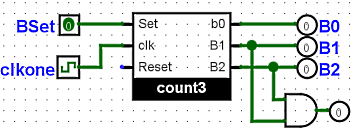
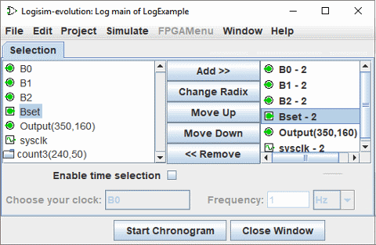

“选择”选项卡
“选择”选项卡允许您选择哪些值应包含在日志中。下面的窗口对应于以下电路。


该选项卡分为三个垂直区域。第一个（最左侧）是电路中所有可记录取值的组件列表。在内置库中，以下类型的组件支持日志记录。
接线库：引脚、探针和时钟组件
I/O 库：按钮和 LED 组件
存储器库：除 ROM 外的所有组件
对于有关联标签的组件，其名称与标签对应；其他组件的名称会说明组件类型及其在电路中的位置。任何子电路也会出现在列表中；它们不能被选择用于记录，但其中支持日志记录的组件可以。请注意，RAM 组件要求您选择要记录的存储器地址；它仅允许记录前 256 个地址。
最后一个（最右侧）垂直区域列出了已选择的组件。此外，它还指示组件多位值记录时的基数（进制）；基数对一位值没有显著影响。
所选列表中必须包含时钟 sysclk；它不会显示在图形中。
中间的按钮列允许对选择中的项目进行操作。
- 添加>>将左侧当前选中的项目添加到选择中。仅对符合条件的组件有效。
- 更改基数在选择中循环切换当前选中组件的基数，在2（二进制）、10（十进制）和16（十六进制）之间。
- 上移将选择中当前选中的组件向前移动一位。
- 下移将选择中当前选中的组件向后移动一位。
- << 移除从选择中移除当前选中的组件。
下方的第四部分允许您定义是否在图形上方显示时间。为此，需要选中“时间参考”复选框，并选择作为参考的信号。频率将定义显示的时间刻度。这并不会改变电路仿真的执行速度。例如，下面我们选择了信号 B0 和 100 Hz 的频率。

下一节：时序图窗口。